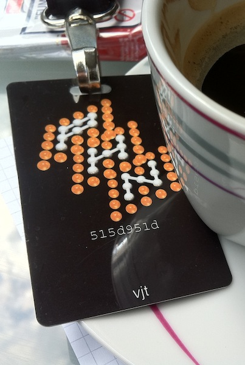

Section: development
goto fail;
In its own words:

Sources: 55179.13.c, 55471.c
Source code differences between two consecutive versions of the Security.framework, a MacOS/iOS component. The seemingly innocuous extra goto fail; is the cause of a severe security flaw in most Apple products.
Install node.js via APT on Debian Squeeze
Abstract: add SID APT source, configure APT Pinning to give squeeze packages priority over SID ones, rebuild the nodejs package under squeeze.
- Add SID APT source by creating
/etc/apt/sources.list.d/sid.list(use your nearest mirror):
deb http://ftp.us.debian.org/debian/ sid main deb-src http://ftp.us.debian.org/debian/ sid main
- Configure APT pinning by creating
/etc/apt/preferences.d/sid:
Package: * Pin: release a=unstable Pin-Priority: 50
- Install the latest version of
libv8manually,libv8-3.8.9.20at the time of writing this:
apt-get install libv8-3.8.9.20
- Download the nodejs package sources, dependencies and build them:
cd apt-get source nodejs apt-get build-dep nodejs cd nodejs-* debuild -nc -uc
- If you encounter
build-dependencyerrors, you should try first to lower the dependency indebian/control, both inBuild-Dependsand inDependsand re-rundebuild. If the build fails (e.g. withundefined reference to `ev_run') the previous version is missing required functions. So, you must install the updated versions of the required dependencies (e.g.libev4) fromsid, usingapt-get install name=versione.g.libev4=1:4.11-1. I suggest this because you’ll have to manually update packages installed fromsid, so the lesser, the best.
- Install the generated package
dpkg -i nodejs_*.deb nodejs-dev*.deb
- Profit :-)
Binding 80/TCP as non-root on your development server

neo-tux by sagarkshetri.com.np
So you have a Linux VM you use for development, because you want to mirror the production environment as closely as possible. You have many applications to deal with, they have to be running at the same time because they are nifty REST JSON web services.
You are very tired to remember which one you put on port 8081, and your configuration files slowly become a real mess. So you set up IP address aliases in for the network interface and decide to assign even host names – /etc/hosts is just fine – for each app.
Then, in such a setup, why would you still need to run them on ports higher than 1024? Wouldn’t be just great to type the application name in the browser address bar? Indeed it is, but it’s better to not run them as root, anyway.
The solution are Linux capabilities (see also here). The one that interests us is cap_net_bind_service: it gives a process the right to bind well-known ports (< 1024). If you use an interpreted language, of course you’ll have to add the capability to the interpreter itself. That’s why there’s development in the title of this article – you should not set this up on a production server, if you don’t know what you are doing.
One final quirk: if you happen to dlopen() shared objects that dynamically link towards libraries outside the canonical paths, you cannot load them via LD_LIBRARY_PATH (e.g. the SYBASE.sh) as it is ignored for setcap-ped processes. You should better move the library paths into an /etc/ld.so.conf.d snippet.
tl;dr
Assuming you are the latest and greatest rails developer, you should become root – or use sudo, as you wish – and
# YOU ARE ON YOUR DEVELOPMENT MACHINE setcap cap_net_bind_service+ep `which ruby`
Profit:
thin start -a yourapp -p 80 >> Using rack adapter >> Thin web server (v1.2.11 codename Bat-Shit Crazy) >> Maximum connections set to 1024 >> Listening on yourapp:80, CTRL+C to stop ...
PH-Neutral 0x7db
“If it is good, they stop making it”, the payoff printed on the conference necklaces, distributed to every participant, along with an über-l33t badge customized with our nickname and the key hash.

Being my first experience at an international security conf (I’ve only been to the ccc2k+7 camp), and being a ph outsider ‘cause I never participated to previous editions, the boot keynote held by FX, staffer and frontman, has been enlightening: “you ought to be here!”, he yelled while pointing at the stage, wearing a white shirt with the Phenoelit logo printed on both arms.
“This conference has never started on time”, he continued, “so there was no reason to do that for this last one”. the schedule is straightforward: party, the next days talks from 12.00PM to 7.30PM, then party, and the last days talks from 12.00PM to 5.30PM. definitely a setup well-playing with the available alcohol :-D.
Afterwards, another speaker informed us that the wi-fi access keys we received at the registration allows us to use a 6 APs/3 repeaters beast driven by an OpenBSD box – they want the audience to hack it because, well, “you are the Worst Case Scenario.” :-)
Rome RSC 2011
Thanks to @jodosha efforts and praising the former Javaday event, now renamed into codemotion that brought in Rome many Ruby developers from Milan, Padua and other parts of Italy – the first official Ruby Social Club in Rome has been a great success. Of course, officialty is measured only in the amount of twitter spam posted about it! :-): earlier RSCs in Rome go back in time to 2006 organized by current mikamai members and more meetups promoted by @jeko in 2007.
What matters is that there's a community, there's a passion, and there's love to share knowledge - no matter who holds the meetings, the important thing is that they're being held :-).
The event was simple and direct - some beers first, then my keynote on RVM and Ruby interpreters, then Luca's one announcing his minege.ms project and after real social networking :-). I met @gravityblast after much time we didn't meet, knew the PIP group and met @svarione, @punkmanit, @leonardoperna, @riggasconi @ogeidix and other smart people. Moreover, we spent quite some nice time together, making up a really lousy and funny week-end.
Of course, huge kudos to @nhaima's car - that tirelessly carried us around Rome for two days :-)
Now, looking forward to the next meetup, thanks everyone who participed, who offered me beers and, last but not least, thanks to @etapeta for bringing me in time at the meeting - you're the real hero :-).
*BSD onto a MacMini 4,1? No way. :-(

I spent the last two days trying to set up the Aluminium Mac Mini (rev. 4,1) as a home NAS server with encrypted storage, and I wanted a BSD system on it. There’s already an embedded OpenBSD onto the soekris gateway, and another companion would have been nice. :-)
Guess what, there’s no way out:
- FreeBSD 8.1 doesn’t complete the boot process, due to a bug in the SATA chipset, NV MCP89;
- FreeBSD 8.2-RC1 boots but, due to the same bug, doesn’t recognize any SATA drive nor any USB umass device;
- NetBSD 5.1 boots fine, handles SATA disks via the generic pciide driver (no DMA, thus quite slow) but, unluckily, doesn’t handle the BCM57762 ethernet controller. I tried with quick and dirty patches to bring the bge driver up to date with -current, but still no luck: the MII link detection works, the card transmits but doesn’t receive. The sdmmc controller as well works with -current but not with 5.1-RELEASE. ACPI works correctly;
- OpenBSD 4.8 boots, can access the SATA drives without DMA, and recognizes the bge network card, but exposes the very same behaviour as NetBSD 5.1 with the -current driver fitted in;
- DragonFlyBSD 2.8.2 doesn’t even enter kernel mode, I suspect due to ACPI bugs;
- PureDarwin didn’t inspire me too much, due to the many blocking issues.
All of them support encrypted storage, I built up a NetBSD CGD disk flawlessly onto dk wedges; FreeBSD has got the interesting gbde(8) and geli(8) GEOM-based tools that I wasn’t able to test, while OpenBSD supports crypto via a softraid personality. Unluckily, support for the, nowadays, exotic Apple hardware is a no-brainer.
So, with no other way left open, I decided to go the Linux route, using the excellent sysresccd, that I elect today as the successor of the pld-linux rescuecd, companion of endless system recoveries :-). Anyway, you’ll need the 2.6.36 kernel to make it boot onto the MacMini4,1, due to the aforementioned MCP89 bug. Ethernet card and SD card reader work out-of-the-box.
Now, I’m playing with LUKS and, while I’m not that competent in cryptography, looks like it is more evolved than the *BSD counterparts, and anyway it is more versatile tool than the tools in OpenBSD and NetBSD. On the latter, having to set up GPT and DK Wedges to make the CGD and synch MBR and Disklabel to make the boot loader work (yuck!), everything coupled with rEFIt is quite a mess™. There’s a GPT loader for NetBSD but I hadn’t a chance to try it out.
I hope this information is useful to anyone who tries a similar adventure, comments are appreciated :-).
Learning about world cultures via Google Autocomplete
Out of curiosity, I was looking how a browser interacts with the Google Instant backend. While looking the HTTP exchanges via Firebug, I first asked myself why they’re encoding HTML and JS with \xYY escape sequences, then why the very same JS functions are sent back and forth on every request, and later I stumbled upon the google.com/s?q=QUERY JSONp service.
Give it a query, and it’ll return the suggested related phrases that are used to build the menu under the search input while using suggestions and/or instant (didn’t dig too much in all the other parameters).
Anyway, what’s interesting is that, of course, the suggestions are customized on a per-country basis. To show the differences explicitly let’s ask the service the simplest query possible, a:
For Italy you’ll get:
$ curl http://www.google.it/s?q=a
window.google.ac.h(["a",[["ansa","","0"],
["alice","","1"],["alitalia","","2"],["alice mail","","3"],
["apple","","4"],["agenzia delle entrate","","5"],
["audi","","6"],["aci","","7"],["autoscout","","8"],
["atm","","9"]],"","","","","",{}])
hum, let’s scrap the JSONp and parameters out:
$ curl -s http://www.google.it/s?q=a | ruby -rjson -ne 'puts JSON($_[19..-2])[1].map(&:first).join(", ")'
ansa, alice, alitalia, alice mail, apple, agenzia delle entrate, audi, aci, autoscout, atm
For the US you’ll get:
amazon, aol, att, apple, american airlines, abc, ask.com, amtrak, addicting games, aim
UK:
argos, amazon, asda, asos, autotrader, aa route planner, aol, apple, amazon uk, aqa
Ireland:
aer lingus, aib, argos, amazon.co.uk, argos.ie, asos, aa route planner, amazon, aldi, aib internet banking
Lastly, because I’ve been there lately and it has been a profound experience, Cuba:
asus, antonio maceo, amor, amigos, ain, antivirus, avira, alba, aduana, as
I’m sure @nhaima is smiling while seeing these words, because hell yeah, over there they really google antivirus software (avira is one of them) a lot because it’s a world without the Internet, thus without free software: you’re condemned in using Windows stuff, and you take what you pay for. Antonio Maceo has been an hero of the 19th century revolution, and it’s in the heart of Cuban people. Amor, Amigos! :-)
Anyway, looks like that simple queries like this really give an insight on what a population thinks and/or needs, because they’re surely generated by the search trends, thus are the “most searched words”. Am I discovering hot water? Maybe, but it was funny to rediscover it. Just make sure not to hammer the /s service with too many requests, because they’ll anyway be handled by the same cluster of machines, thus you’ll be banned early (I’ve been :-p).
Panmind spin-offs presented at Ruby Social Club Milan
On July 22nd 2010, Mikamai hosted a Ruby Social Club in Milan, where nearly 50 people attended watching five speeches about Ruby, Web development and Startups. I was glad to be one of the speakers, and I presented a set of Rails plugins we spinned off from our latest (and greatest) project: Panmind (read more on the about page) and released as Open Source on GitHub.
The keynote is split in two parts: the first one explains why you should follow the sane software engineering principle of writing modular and interest-separated code and then how you could (and should) extract it from your Rails application by decoupling configuration and then prepare for the Open Source release, by writing documentation AND presenting to a Ruby event so, hopefully, someone else will write unit tests! :-)
We released an SSL helper plugin that implements filters (like Rails' ssl_requirement) but also named route helpers: no more <%= url_for :protocol => 'https' %>! You'll have something like plain_root_url and ssl_login_url - like they were built into the framework.
Then, a Google Analytics ultra-simple plugin, with <noscript> support, a couple of test helpers and an embryo of a JS Analytics framework - hopefully it'll evolve into a complete jQuery plugin. Then, a ReCaptcha interface, with AJAX validation support and eventually a Zendesk interface for Rails.
We released also more code on Panmind's GitHub account, including the nifty AJAX Navigation Framework that implements all the boilerplate code for the ultra-fast AJAX navigation of panmind contents and projects.
The keynote follows, you can download it in PDF (no exploits, I swear! :-) from this link or view/comment it on slideshare here.
Final words: check out mikamai blog post on the Ruby Social Club to read the other keynotes (I will, hopefully, update this post with sum-ups of them when time permits :-)) and say hello on twitter or on GitHub if you're interested in contributing our open source projects or you want to work with us.
Spent my day on Erlang-Ruby-Marshal today ;-)

In a nutshell, it adds support for unmarshaling 1.9 strings, and implements the last missing type (TYPE_LINK) that was missing from the code. Tests still lack, can someone help ? :-)
Added TYPE_LINK, needed because of how ruby 1.9 marshals strings.
In 1.9, Ruby marshals the string encoding in the binary output, and
uses an Ivar construct (TYPE_IVAR) to wrap the string and adds an
"encoding" instance variable (notice: without a leading @) whose
value is the encoding itself.
While the Ivar code worked correctly, the values of the encodings
are actually *strings*, that are being reused via the TYPE_LINK
construct, that wasn't implemented.
So, the get() and put() primitives are being used to store not
only tuples {id, sym} for symbols, but now store either
{{symbol, ID}, sym}
OR
{{value, ID}, val}
for the other types that use TYPE_LINK.
By reading the ruby marshal.c source code, it looks like that MANY
data types save their values in the arg->data hashtable, but by
inspecting the binary marshal output of, e.g, an array of floats,
links aren't used.
Thus, in this unmarshaler, links are considered, for now, only for
strings and regexes.
Fork me on GitHub: http://github.com/vjt/erlang-ruby-marshal
CouchDB 0.11 Invalid UTF-8 JSON: Solved

If your CouchDB 0.11 gives you the “Invalid UTF-8 JSON” error on every POST or PUT you issue to it, make sure that in your $prefix/usr/lib/couchdb/erlang/lib there aren’t leftovers from previous installations.
On our dev server, I found there two directories (“couch-0.10” and “mochiweb-r97“) from the old 0.10 setup that were causing this issue.
This applies if you upgraded from source, as you’ve probably did, because there aren’t too many packages of CouchDB 0.11 as of April 2010 :-).
Huge thanks to @couchdb for hinting me in the right direction after reading a report on the dev mailing list but I didn’t want to “remove and reinstall” because I like to understand what’s going on ;-).
Footnote: could this be the end of Hiatus? I hope so ;-p
Rails3: Better, Faster, Stronger
For those who understand italian, I’ve just published an article on therubymine.com on the upcoming Ruby on Rails framework release, version 3.0: the big news is the merger with another ruby web framework, merb.
Have a nice read! :-)
http://therubymine.com/2009/06/04/rails3-better-faster-stronger/
E-Privacy 2009: Towards Global Control
The Recipe

Ingredients
- The 2009 social environment
- A bunch of hackers
- Some competent lawyers
- A Google Spokesman
- The Big Brother Awards
- A consistent amount of paranoia
Preparation
Take the whole social environment, utterly unprepared to the media \(r)evolution happening in the last years, and let the hackers observe and talk/write about it. Bring in the lawyers, and let them recognize that “Houston! We’ve got a problem!”, whilst also they define it via lawspeak. Ask questions, and participate to interesting debates.
Now, deliver the 2007 big brother award to the Google Representative, let the sun dive in the hills, add a noticeable amount of Tuscany red wine, and get ready for the next day. Let the paranoia flow, while the hackers show how you can be traced and found via the cellular network and spied via wifi-networked cameras placed there for your safety.
Watch the undelivered Big Brother Awards 2009 sit on the speakers’ desk and suddenly put on sale on ebay, and go back home, where you read about, and watch, a video-edited interview to the italian PM.
Put everything into the fridge, and give your brain two days to metabolize it. Then write it all LOUD [ .. ]